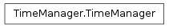
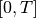
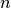
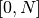
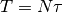
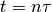

TimeManager¶
About the TimeManager class¶
The WaveBlocks Project
@author: R. Bourquin @copyright: Copyright (C) 2010, 2011, 2012, 2013, 2014 R. Bourquin @license: Modified BSD License
Inheritance diagram¶

Class documentation¶
- class WaveBlocksND.TimeManager(parameters)¶
This class performs several computations with time, timesteps and so forth.
The important quantities here are:
Quantity Parameter Name Description 
T the fixed simulation end time 
dt the size of the timestep 
nsteps the overall number of timesteps. 
an unspecified time in the interval   an unspecified timestep in the interval  The important relations that hold are  and in analogy . There are also conversion routines for
and .The simulation parameters handed over to the constructor must contain at least two out of the three values
, and . If all three
are given, the user is responsible for compatible values.Additionally the class contains some routines for determining if and when some events (for example saving data) should occur.
- add_to_eventlist(alist)¶
Add a list of times and/or timesteps to the list of times when irregular events get triggered.
Parameters: alist – A list with integers (interpreted as timesteps) and/or floats (interpreted as times) Note that the times and timesteps can be mixed and need not to be given in monotone order.
- compute_endtime()¶
Computes the simulation endtime
.Returns: The endtime .
- compute_number_events()¶
Compute the number of events we will perform during the simulation. This can for example be used to determine how much space to allocate in the output files if the events are times at which simulation data is saved.
Returns: The number of events.
- compute_number_timesteps()¶
Computes the number of time steps we will perform.
Returns: the number of timesteps.
- compute_time(n)¶
Compute the time
from a timestep such that
holds.Parameters: n – The timestep n of which we want to find the corresponding time. Returns: The corresponding time .
- compute_timestep(t)¶
Compute the timestep from a time
such that
holds.Parameters: t – The time t of which we want to find the timestep number. Returns: The corresponding timestep . Note that the user has to ensure that time
is an integral
multiple of .
- compute_timestep_size()¶
Computes the simulation timestep size
.Returns: The timestep .
- get_T()¶
Set the simulation endtime
.Returns: The endtime .
- get_dt()¶
Get the simulation timestep size
.Returns: The timestep .
- get_nsteps()¶
Get the number of timesteps the simulation runs.
Returns: the number of timesteps.
- is_event(n)¶
Determine if an event occurs right now.
Parameters: n – The current timestep in question. Returns: True or False.
- set_T(T)¶
Set the simulation endtime
.Parameters: T – The simulation end time.
- set_dt(dt)¶
Set the simulation timestep size
.Parameters: dt – The simulation timestep size.
- set_interval(interval)¶
Set the interval for regular events.
Parameters: interval – The interval at which regular events get triggered. Note that a value of 0 means there are no regular events.
- set_nsteps(nsteps)¶
Set the number of timesteps the simulation runs.
Parameters: nsteps – The number timesteps we do.